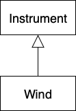

[TOC]
1. 第八章 复用
代码复用是面向对象编程（OOP）最具魅力的原因之一。
对于像 C 语言等面向过程语言来说，“复用”通常指的就是“复制代码”。任何语言都可通过简单复制来达到代码复用的目的，但是这样做的效果并不好。Java 围绕“类”（Class）来解决问题。我们可以直接使用别人构建或调试过的代码，而非创建新类、重新开始。
如何在不污染源代码的前提下使用现存代码是需要技巧的。在本章里，你将学习到两种方式来达到这个目的：
第一种方式直接了当。在新类中创建现有类的对象。这种方式叫做“组合”（Composition），通过这种方式复用代码的功能，而非其形式。
第二种方式更为微妙。创建现有类类型的新类。照字面理解：采用现有类形式，又无需在编码时改动其代码，这种方式就叫做“继承”（Inheritance），编译器会做大部分的工作。继承是面向对象编程（OOP）的重要基础之一。更多功能相关将在多态（Polymorphism）章节中介绍。
组合与继承的语法、行为上有许多相似的地方（这其实是有道理的，毕竟都是基于现有类型构建新的类型）。在本章中，你会学到这两种代码复用的方法。
1.1. 组合语法
在前面的学习中，“组合”（Composition）已经被多次使用。你仅需要把对象的引用（object references）放置在一个新的类里，这就使用了组合。例如，假设你需要一个对象，其中内置了几个 String 对象，两个基本类型（primitives）的属性字段，一个其他类的对象。对于非基本类型对象，将引用直接放置在新类中，对于基本类型属性字段则仅进行声明。
// reuse/SprinklerSystem.java
// (c)2017 MindView LLC: see Copyright.txt
// We make no guarantees that this code is fit for any purpose.
// Visit http://OnJava8.com for more book information.
// Composition for code reuse
class WaterSource {
private String s;
WaterSource() {
System.out.println("WaterSource()");
s = "Constructed";
}
@Override
public String toString() { return s; }
}
public class SprinklerSystem {
private String valve1, valve2, valve3, valve4;
private WaterSource source = new WaterSource();
private int i;
private float f;
@Override
public String toString() {
return
"valve1 = " + valve1 + " " +
"valve2 = " + valve2 + " " +
"valve3 = " + valve3 + " " +
"valve4 = " + valve4 + "\n" +
"i = " + i + " " + "f = " + f + " " +
"source = " + source; // [1]
}
public static void main(String[] args) {
SprinklerSystem sprinklers = new SprinklerSystem();
System.out.println(sprinklers);
}
}
/* Output:
WaterSource()
valve1 = null valve2 = null valve3 = null valve4 = null
i = 0 f = 0.0 source = Constructed
*/
这两个类中定义的一个方法是特殊的: toString()。每个非基本类型对象都有一个 toString() 方法，在编译器需要字符串但它有对象的特殊情况下调用该方法。因此，在 [1] 中，编译器看到你试图“添加”一个 WaterSource 类型的字符串对象 。因为字符串只能拼接另一个字符串，所以它就先会调用 toString() 将 source 转换成一个字符串。然后，它可以拼接这两个字符串并将结果字符串传递给 System.out.println()。要对创建的任何类允许这种行为，只需要编写一个 toString() 方法。在 toString() 上使用 @Override 注释来告诉编译器，以确保正确地覆盖。@Override 是可选的，但它有助于验证你没有拼写错误 (或者更微妙地说，大小写字母输入错误)。类中的基本类型字段自动初始化为零，正如 object Everywhere 一章中所述。但是对象引用被初始化为 null，如果你尝试调用其任何一个方法，你将得到一个异常（一个运行时错误）。方便的是，打印 null 引用却不会得到异常。
编译器不会为每个引用创建一个默认对象，这是有意义的，因为在许多情况下，这会导致不必要的开销。初始化引用有四种方法:
- 当对象被定义时。这意味着它们总是在调用构造函数之前初始化。
- 在该类的构造函数中。
- 在实际使用对象之前。这通常称为延迟初始化。在对象创建开销大且不需要每次都创建对象的情况下，它可以减少开销。
- 使用实例初始化。
以上四种实例创建的方法例子在这：
// reuse/Bath.java
// (c)2017 MindView LLC: see Copyright.txt
// We make no guarantees that this code is fit for any purpose.
// Visit http://OnJava8.com for more book information.
// Constructor initialization with composition
class Soap {
private String s;
Soap() {
System.out.println("Soap()");
s = "Constructed";
}
@Override
public String toString() { return s; }
}
public class Bath {
private String // Initializing at point of definition:
s1 = "Happy",
s2 = "Happy",
s3, s4;
private Soap castille;
private int i;
private float toy;
public Bath() {
System.out.println("Inside Bath()");
s3 = "Joy";
toy = 3.14f;
castille = new Soap();
}
// Instance initialization:
{ i = 47; }
@Override
public String toString() {
if(s4 == null) // Delayed initialization:
s4 = "Joy";
return
"s1 = " + s1 + "\n" +
"s2 = " + s2 + "\n" +
"s3 = " + s3 + "\n" +
"s4 = " + s4 + "\n" +
"i = " + i + "\n" +
"toy = " + toy + "\n" +
"castille = " + castille;
}
public static void main(String[] args) {
Bath b = new Bath();
System.out.println(b);
}
}
/* Output:
Inside Bath()
Soap()
s1 = Happy
s2 = Happy
s3 = Joy
s4 = Joy
i = 47
toy = 3.14
castille = Constructed
*/
在 Bath 构造函数中，有一个代码块在所有初始化发生前就已经执行了。当你不在定义处初始化时，仍然不能保证在向对象引用发送消息之前执行任何初始化——如果你试图对未初始化的引用调用方法，则未初始化的引用将产生运行时异常。
当调用 toString() 时，它将赋值 s4，以便在使用字段的时候所有的属性都已被初始化。
1.2. 继承语法
继承是所有面向对象语言的一个组成部分。事实证明，在创建类时总是要继承，因为除非显式地继承其他类，否则就隐式地继承 Java 的标准根类对象（Object）。
组合的语法很明显，但是继承使用了一种特殊的语法。当你继承时，你说，“这个新类与那个旧类类似。你可以在类主体的左大括号前的代码中声明这一点，使用关键字 extends 后跟基类的名称。当你这样做时，你将自动获得基类中的所有字段和方法。这里有一个例子:
// reuse/Detergent.java
// (c)2017 MindView LLC: see Copyright.txt
// We make no guarantees that this code is fit for any purpose.
// Visit http://OnJava8.com for more book information.
// Inheritance syntax & properties
class Cleanser {
private String s = "Cleanser";
public void append(String a) { s += a; }
public void dilute() { append(" dilute()"); }
public void apply() { append(" apply()"); }
public void scrub() { append(" scrub()"); }
@Override
public String toString() { return s; }
public static void main(String[] args) {
Cleanser x = new Cleanser();
x.dilute(); x.apply(); x.scrub();
System.out.println(x);
}
}
public class Detergent extends Cleanser {
// Change a method:
@Override
public void scrub() {
append(" Detergent.scrub()");
super.scrub(); // Call base-class version
}
// Add methods to the interface:
public void foam() { append(" foam()"); }
// Test the new class:
public static void main(String[] args) {
Detergent x = new Detergent();
x.dilute();
x.apply();
x.scrub();
x.foam();
System.out.println(x);
System.out.println("Testing base class:");
Cleanser.main(args);
}
}
/* Output:
Cleanser dilute() apply() Detergent.scrub() scrub()
foam()
Testing base class:
Cleanser dilute() apply() scrub()
*/
这演示了一些特性。首先，在 Cleanser 的 append() 方法中，使用 += 操作符将字符串连接到 s，这是 Java 设计人员“重载”来处理字符串的操作符之一 (还有 + )。
第二，Cleanser 和 Detergent 都包含一个 main() 方法。你可以为每个类创建一个 main() ; 这允许对每个类进行简单的测试。当你完成测试时，不需要删除 main(); 你可以将其留在以后的测试中。即使程序中有很多类都有 main() 方法，惟一运行的只有在命令行上调用的 main()。这里，当你使用 java Detergent 时候，就调用了 Detergent.main()。但是你也可以使用 java Cleanser 来调用 Cleanser.main()，即使 Cleanser 不是一个公共类。即使类只具有包访问权，也可以访问 public main()。
在这里，Detergent.main() 显式地调用 Cleanser.main()，从命令行传递相同的参数(当然，你可以传递任何字符串数组)。
Cleanser 中的所有方法都是公开的。请记住，如果不使用任何访问修饰符，则成员默认为包访问权限，这只允许包内成员访问。因此，如果没有访问修饰符，那么包内的任何人都可以使用这些方法。例如，Detergent 就没有问题。但是，如果其他包中的类继承 Cleanser，则该类只能访问 Cleanser 的公共成员。因此，为了允许继承，一般规则是所有字段为私有，所有方法为公共。(受保护成员也允许派生类访问;你以后会知道的。)在特定的情况下，你必须进行调整，但这是一个有用的指南。
Cleanser 的接口中有一组方法: append()、dilute()、apply()、scrub() 和 toString()。因为 Detergent 是从 Cleanser 派生的(通过 extends 关键字)，所以它会在其接口中自动获取所有这些方法，即使你没有在 Detergent 中看到所有这些方法的显式定义。那么，可以把继承看作是复用类。如在 scrub() 中所见，可以使用基类中定义的方法并修改它。在这里，你可以在新类中调用基类的该方法。但是在 scrub() 内部，不能简单地调用 scrub()，因为这会产生递归调用。为了解决这个问题，Java的 super 关键字引用了当前类继承的“超类”(基类)。因此表达式 super.scrub() 调用方法 scrub() 的基类版本。
继承时，你不受限于使用基类的方法。你还可以像向类添加任何方法一样向派生类添加新方法:只需定义它。方法 foam() 就是一个例子。Detergent.main() 中可以看到，对于 Detergent 对象，你可以调用 Cleanser 和 Detergent 中可用的所有方法 (如 foam() )。
1.2.1. 初始化基类
现在涉及到两个类:基类和派生类。想象派生类生成的结果对象可能会让人感到困惑。从外部看，新类与基类具有相同的接口，可能还有一些额外的方法和字段。但是继承并不只是复制基类的接口。当你创建派生类的对象时，它包含基类的子对象。这个子对象与你自己创建基类的对象是一样的。只是从外部看，基类的子对象被包装在派生类的对象中。
必须正确初始化基类子对象，而且只有一种方法可以保证这一点 : 通过调用基类构造函数在构造函数中执行初始化，该构造函数具有执行基类初始化所需的所有适当信息和特权。Java 自动在派生类构造函数中插入对基类构造函数的调用。下面的例子展示了三个层次的继承:
// reuse/Cartoon.java
// (c)2017 MindView LLC: see Copyright.txt
// We make no guarantees that this code is fit for any purpose.
// Visit http://OnJava8.com for more book information.
// Constructor calls during inheritance
class Art {
Art() {
System.out.println("Art constructor");
}
}
class Drawing extends Art {
Drawing() {
System.out.println("Drawing constructor");
}
}
public class Cartoon extends Drawing {
public Cartoon() {
System.out.println("Cartoon constructor");
}
public static void main(String[] args) {
Cartoon x = new Cartoon();
}
}
/* Output:
Art constructor
Drawing constructor
Cartoon constructor
*/
构造从基类“向外”进行，因此基类在派生类构造函数能够访问它之前进行初始化。即使不为 Cartoon 创建构造函数，编译器也会为你合成一个无参数构造函数，调用基类构造函数。尝试删除 Cartoon 构造函数来查看这个。
1.2.2. 带参数的构造函数
上面的所有例子中构造函数都是无参数的 ; 编译器很容易调用这些构造函数，因为不需要参数。如果没有无参数的基类构造函数，或者必须调用具有参数的基类构造函数，则必须使用 super 关键字和适当的参数列表显式地编写对基类构造函数的调用:
// reuse/Chess.java
// (c)2017 MindView LLC: see Copyright.txt
// We make no guarantees that this code is fit for any purpose.
// Visit http://OnJava8.com for more book information.
// Inheritance, constructors and arguments
class Game {
Game(int i) {
System.out.println("Game constructor");
}
}
class BoardGame extends Game {
BoardGame(int i) {
super(i);
System.out.println("BoardGame constructor");
}
}
public class Chess extends BoardGame {
Chess() {
super(11);
System.out.println("Chess constructor");
}
public static void main(String[] args) {
Chess x = new Chess();
}
}
/* Output:
Game constructor
BoardGame constructor
Chess constructor
*/
如果没有在 BoardGame 构造函数中调用基类构造函数，编译器就会报错找不到 Game() 的构造函数。此外，对基类构造函数的调用必须是派生类构造函数中的第一个操作。(如果你写错了，编译器会提醒你。)
1.3. 委托
Java不直接支持的第三种重用关系称为委托。这介于继承和组合之间，因为你将一个成员对象放在正在构建的类中(比如组合)，但同时又在新类中公开来自成员对象的所有方法(比如继承)。例如，宇宙飞船需要一个控制模块:
// reuse/SpaceShipControls.java
// (c)2017 MindView LLC: see Copyright.txt
// We make no guarantees that this code is fit for any purpose.
// Visit http://OnJava8.com for more book information.
public class SpaceShipControls {
void up(int velocity) {}
void down(int velocity) {}
void left(int velocity) {}
void right(int velocity) {}
void forward(int velocity) {}
void back(int velocity) {}
void turboBoost() {}
}
建造宇宙飞船的一种方法是使用继承:
// reuse/DerivedSpaceShip.java
// (c)2017 MindView LLC: see Copyright.txt
// We make no guarantees that this code is fit for any purpose.
// Visit http://OnJava8.com for more book information.
public class
DerivedSpaceShip extends SpaceShipControls {
private String name;
public DerivedSpaceShip(String name) {
this.name = name;
}
@Override
public String toString() { return name; }
public static void main(String[] args) {
DerivedSpaceShip protector =
new DerivedSpaceShip("NSEA Protector");
protector.forward(100);
}
}
然而， DerivedSpaceShip 并不是真正的“一种” SpaceShipControls ，即使你“告诉” DerivedSpaceShip 调用 forward()。更准确地说，一艘宇宙飞船包含了 SpaceShipControls ，同时 SpaceShipControls 中的所有方法都暴露在宇宙飞船中。委托解决了这个难题:
// reuse/SpaceShipDelegation.java
// (c)2017 MindView LLC: see Copyright.txt
// We make no guarantees that this code is fit for any purpose.
// Visit http://OnJava8.com for more book information.
public class SpaceShipDelegation {
private String name;
private SpaceShipControls controls =
new SpaceShipControls();
public SpaceShipDelegation(String name) {
this.name = name;
}
// Delegated methods:
public void back(int velocity) {
controls.back(velocity);
}
public void down(int velocity) {
controls.down(velocity);
}
public void forward(int velocity) {
controls.forward(velocity);
}
public void left(int velocity) {
controls.left(velocity);
}
public void right(int velocity) {
controls.right(velocity);
}
public void turboBoost() {
controls.turboBoost();
}
public void up(int velocity) {
controls.up(velocity);
}
public static void main(String[] args) {
SpaceShipDelegation protector =
new SpaceShipDelegation("NSEA Protector");
protector.forward(100);
}
}
方法被转发到底层 control 对象，因此接口与继承的接口是相同的。但是，你对委托有更多的控制，因为你可以选择只在成员对象中提供方法的子集。
虽然Java语言不支持委托，但是开发工具常常支持。例如，上面的例子是使用 JetBrains Idea IDE 自动生成的。
1.4. 结合组合与继承
你将经常同时使用组合和继承。下面的例子展示了使用继承和组合创建类，以及必要的构造函数初始化:
// reuse/PlaceSetting.java
// (c)2017 MindView LLC: see Copyright.txt
// We make no guarantees that this code is fit for any purpose.
// Visit http://OnJava8.com for more book information.
// Combining composition & inheritance
class Plate {
Plate(int i) {
System.out.println("Plate constructor");
}
}
class DinnerPlate extends Plate {
DinnerPlate(int i) {
super(i);
System.out.println("DinnerPlate constructor");
}
}
class Utensil {
Utensil(int i) {
System.out.println("Utensil constructor");
}
}
class Spoon extends Utensil {
Spoon(int i) {
super(i);
System.out.println("Spoon constructor");
}
}
class Fork extends Utensil {
Fork(int i) {
super(i);
System.out.println("Fork constructor");
}
}
class Knife extends Utensil {
Knife(int i) {
super(i);
System.out.println("Knife constructor");
}
}
// A cultural way of doing something:
class Custom {
Custom(int i) {
System.out.println("Custom constructor");
}
}
public class PlaceSetting extends Custom {
private Spoon sp;
private Fork frk;
private Knife kn;
private DinnerPlate pl;
public PlaceSetting(int i) {
super(i + 1);
sp = new Spoon(i + 2);
frk = new Fork(i + 3);
kn = new Knife(i + 4);
pl = new DinnerPlate(i + 5);
System.out.println("PlaceSetting constructor");
}
public static void main(String[] args) {
PlaceSetting x = new PlaceSetting(9);
}
}
/* Output:
Custom constructor
Utensil constructor
Spoon constructor
Utensil constructor
Fork constructor
Utensil constructor
Knife constructor
Plate constructor
DinnerPlate constructor
PlaceSetting constructor
*/
尽管编译器强制你初始化基类，并要求你在构造函数的开头就初始化基类，但它并不监视你以确保你初始化了成员对象。注意类是如何干净地分离的。你甚至不需要方法重用代码的源代码。你最多只导入一个包。(这对于继承和组合都是正确的。)
1.4.1. 保证适当的清理
Java 没有 C++ 中析构函数的概念，析构函数是在对象被销毁时自动调用的方法。原因可能是，在Java中，通常是忘掉而不是销毁对象，从而允许垃圾收集器根据需要回收内存。通常这是可以的，但是有时你的类可能在其生命周期中执行一些需要清理的活动。初始化和清理章节提到，你无法知道垃圾收集器何时会被调用，甚至它是否会被调用。因此，如果你想为类清理一些东西，必须显式地编写一个特殊的方法来完成它，并确保客户端程序员知道他们必须调用这个方法。最重要的是——正如在"异常"章节中描述的——你必须通过在 finally 子句中放置此类清理来防止异常。
请考虑一个在屏幕上绘制图片的计算机辅助设计系统的例子:
// reuse/CADSystem.java
// (c)2017 MindView LLC: see Copyright.txt
// We make no guarantees that this code is fit for any purpose.
// Visit http://OnJava8.com for more book information.
// Ensuring proper cleanup
// {java reuse.CADSystem}
package reuse;
class Shape {
Shape(int i) {
System.out.println("Shape constructor");
}
void dispose() {
System.out.println("Shape dispose");
}
}
class Circle extends Shape {
Circle(int i) {
super(i);
System.out.println("Drawing Circle");
}
@Override
void dispose() {
System.out.println("Erasing Circle");
super.dispose();
}
}
class Triangle extends Shape {
Triangle(int i) {
super(i);
System.out.println("Drawing Triangle");
}
@Override
void dispose() {
System.out.println("Erasing Triangle");
super.dispose();
}
}
class Line extends Shape {
private int start, end;
Line(int start, int end) {
super(start);
this.start = start;
this.end = end;
System.out.println(
"Drawing Line: " + start + ", " + end);
}
@Override
void dispose() {
System.out.println(
"Erasing Line: " + start + ", " + end);
super.dispose();
}
}
public class CADSystem extends Shape {
private Circle c;
private Triangle t;
private Line[] lines = new Line[3];
public CADSystem(int i) {
super(i + 1);
for(int j = 0; j < lines.length; j++)
lines[j] = new Line(j, j*j);
c = new Circle(1);
t = new Triangle(1);
System.out.println("Combined constructor");
}
@Override
public void dispose() {
System.out.println("CADSystem.dispose()");
// The order of cleanup is the reverse
// of the order of initialization:
t.dispose();
c.dispose();
for(int i = lines.length - 1; i >= 0; i--)
lines[i].dispose();
super.dispose();
}
public static void main(String[] args) {
CADSystem x = new CADSystem(47);
try {
// Code and exception handling...
} finally {
x.dispose();
}
}
}
/* Output:
Shape constructor
Shape constructor
Drawing Line: 0, 0
Shape constructor
Drawing Line: 1, 1
Shape constructor
Drawing Line: 2, 4
Shape constructor
Drawing Circle
Shape constructor
Drawing Triangle
Combined constructor
CADSystem.dispose()
Erasing Triangle
Shape dispose
Erasing Circle
Shape dispose
Erasing Line: 2, 4
Shape dispose
Erasing Line: 1, 1
Shape dispose
Erasing Line: 0, 0
Shape dispose
Shape dispose
*/
这个系统中的所有东西都是某种 Shape (它本身是一种 Object，因为它是从根类隐式继承的) 。除了使用 super 调用该方法的基类版本外，每个类还覆盖 dispose() 方法。特定的 Shape 类——Circle、Triangle 和 Line，都有 “draw” 构造函数，尽管在对象的生命周期中调用的任何方法都可以负责做一些需要清理的事情。每个类都有自己的 dispose() 方法来将非内存的内容恢复到对象存在之前的状态。
在 main() 中，有两个关键字是你以前没有见过的，在"异常"一章之前不会详细解释: try 和 finally。try 关键字表示后面的块 (用花括号分隔 )是一个受保护的区域，这意味着它得到了特殊处理。其中一个特殊处理是，无论 try 块如何退出，在这个保护区域之后的 finally 子句中的代码总是被执行。(通过异常处理，可以用许多不同寻常的方式留下 try 块。)这里，finally 子句的意思是，“无论发生什么，始终调用 x.dispose()。”
在清理方法 (在本例中是 dispose() ) 中，还必须注意基类和成员对象清理方法的调用顺序，以防一个子对象依赖于另一个子对象。首先，按与创建的相反顺序执行特定于类的所有清理工作。(一般来说，这要求基类元素仍然是可访问的。) 然后调用基类清理方法，如这所示。
在很多情况下，清理问题不是问题；你只需要让垃圾收集器来完成这项工作。但是，当你必须执行显式清理时，就需要多做努力，更加细心，因为在垃圾收集方面没有什么可以依赖的。可能永远不会调用垃圾收集器。如果调用，它可以按照它想要的任何顺序回收对象。除了内存回收外，你不能依赖垃圾收集来做任何事情。如果希望进行清理，可以使用自己的清理方法，不要使用 finalize()。
1.4.2. 名称隐藏
如果 Java 基类的方法名多次重载，则在派生类中重新定义该方法名不会隐藏任何基类版本。不管方法是在这个级别定义的，还是在基类中定义的，重载都会起作用:
// reuse/Hide.java
// (c)2017 MindView LLC: see Copyright.txt
// We make no guarantees that this code is fit for any purpose.
// Visit http://OnJava8.com for more book information.
// Overloading a base-class method name in a derived
// class does not hide the base-class versions
class Homer {
char doh(char c) {
System.out.println("doh(char)");
return 'd';
}
float doh(float f) {
System.out.println("doh(float)");
return 1.0f;
}
}
class Milhouse {}
class Bart extends Homer {
void doh(Milhouse m) {
System.out.println("doh(Milhouse)");
}
}
public class Hide {
public static void main(String[] args) {
Bart b = new Bart();
b.doh(1);
b.doh('x');
b.doh(1.0f);
b.doh(new Milhouse());
}
}
/* Output:
doh(float)
doh(char)
doh(float)
doh(Milhouse)
*/
Homer 的所有重载方法在 Bart 中都是可用的，尽管 Bart 引入了一种新的重载方法。在下一章中你将看到，使用与基类中完全相同的签名和返回类型覆盖相同名称的方法要常见得多。否则就会令人困惑。
你已经看到了Java 5 @Override 注释，它不是关键字，但是可以像使用关键字一样使用它。当你打算重写一个方法时，你可以选择添加这个注释，如果你不小心用了重载而不是重写，编译器会产生一个错误消息:
// reuse/Lisa.java
// (c)2017 MindView LLC: see Copyright.txt
// We make no guarantees that this code is fit for any purpose.
// Visit http://OnJava8.com for more book information.
// {WillNotCompile}
class Lisa extends Homer {
@Override void doh(Milhouse m) {
System.out.println("doh(Milhouse)");
}
}
{WillNotCompile} 标记将该文件排除在本书的 Gradle 构建之外，但是如果你手工编译它，你将看到:方法不会覆盖超类中的方法， @Override 注释防止你意外地重载。
1.5. 组合与继承的选择
组合和继承都允许在新类中放置子对象（组合是显式的，而继承是隐式的）。你或许想知道这二者之间的区别，以及怎样在二者间做选择。
当你想在新类中包含一个已有类的功能时，使用组合，而非继承。也就是说，在新类中嵌入一个对象（通常是私有的），以实现其功能。新类的使用者看到的是你所定义的新类的接口，而非嵌入对象的接口。
有时让类的用户直接访问到新类中的组合成分是有意义的。只需将成员对象声明为 public 即可（可以把这当作“半委托”的一种）。成员对象隐藏了具体实现，所以这是安全的。当用户知道你正在组装一组部件时，会使得接口更加容易理解。下面的 car 对象是个很好的例子：
// reuse/Car.java
// Composition with public objects
class Engine {
public void start() {}
public void rev() {}
public void stop() {}
}
class Wheel {
public void inflate(int psi) {}
}
class Window {
public void rollup() {}
public void rolldown() {}
}
class Door {
public Window window = new Window();
public void open() {}
public void close() {}
}
public class Car {
public Engine engine = new Engine();
public Wheel[] wheel = new Wheel[4];
public Door left = new Door(), right = new Door(); // 2-door
public Car() {
for (int i = 0; i < 4; i++) {
wheel[i] = new Wheel();
}
}
public static void main(String[] args) {
Car car = new Car();
car.left.window.rollup();
car.wheel[0].inflate(72);
}
}
因为在这个例子中 car 的组合也是问题分析的一部分（不是底层设计的部分），所以声明成员为 public 有助于客户端程序员理解如何使用类，且降低了类创建者面临的代码复杂度。但是，记住这是一个特例。通常来说，属性还是应该声明为 private。
当使用继承时，使用一个现有类并开发出它的新版本。通常这意味着使用一个通用类，并为了某个特殊需求将其特殊化。稍微思考下，你就会发现，用一个交通工具对象来组成一部车是毫无意义的——车不包含交通工具，它就是交通工具。这种“是一个”的关系是用继承来表达的，而“有一个“的关系则用组合来表达。
1.6. protected
即然你已经接触到继承，关键字 protected 就变得有意义了。在理想世界中，仅靠关键字 private 就足够了。在实际项目中，却经常想把一个事物尽量对外界隐藏，而允许派生类的成员访问。
关键字 protected 就起这个作用。它表示“就类的用户而言，这是 private 的。但对于任何继承它的子类或在同一包中的类，它是可访问的。”（protected 也提供了包访问权限）
尽管可以创建 protected 属性，但是最好的方式是将属性声明为 private 以一直保留更改底层实现的权利。然后通过 protected 控制类的继承者的访问权限。
// reuse/Orc.java
// The protected keyword
class Villain {
private String name;
protected void set(String nm) {
name = nm;
}
Villain(String name) {
this.name = name;
}
@Override
public String toString() {
return "I'm a Villain and my name is " + name;
}
}
public class Orc extends Villain {
private int orcNumber;
public Orc(String name, int orcNumber) {
super(name);
this.orcNumber = orcNumber;
}
public void change(String name, int orcNumber) {
set(name); // Available because it's protected
this.orcNumber = orcNumber;
}
@Override
public String toString() {
return "Orc " + orcNumber + ": " + super.toString();
}
public static void main(String[] args) {
Orc orc = new Orc("Limburger", 12);
System.out.println(orc);
orc.change("Bob", 19);
System.out.println(orc);
}
}
输出：
Orc 12: I'm a Villain and my name is Limburger
Orc 19: I'm a Villain and my name is Bob
change() 方法可以访问 set() 方法，因为 set() 方法是 protected。注意到，类 Orc 的 toString() 方法也使用了基类的版本。
1.7. 向上转型
继承最重要的方面不是为新类提供方法。它是新类与基类的一种关系。简而言之，这种关系可以表述为“新类是已有类的一种类型”。
这种描述并非是解释继承的一种花哨方式，这是直接由语言支持的。例如，假设有一个基类 Instrument 代表音乐乐器和一个派生类 Wind。 因为继承保证了基类的所有方法在派生类中也是可用的，所以任意发送给该基类的消息也能发送给派生类。如果 Instrument 有一个 play() 方法，那么 Wind 也有该方法。这意味着你可以准确地说 Wind 对象也是一种类型的 Instrument。下面例子展示了编译器是如何支持这一概念的：
// reuse/Wind.java
// Inheritance & upcasting
class Instrument {
public void play() {}
static void tune(Instrument i) {
// ...
i.play();
}
}
// Wind objects are instruments
// because they have the same interface:
public class Wind extends Instrument {
public static void main(String[] args) {
Wind flute = new Wind();
Instrument.tune(flute); // Upcasting
}
}
tune() 方法接受了一个 Instrument 类型的引用。但是，在 Wind 的 main() 方法里，tune() 方法却传入了一个 Wind 引用。鉴于 Java 对类型检查十分严格，一个接收一种类型的方法接受了另一种类型看起来很奇怪，除非你意识到 Wind 对象同时也是一个 Instrument 对象，而且 Instrument 的 tune 方法一定会存在于 Wind 中。在 tune() 中，代码对 Instrument 和 所有 Instrument 的派生类起作用，这种把 Wind 引用转换为 Instrument 引用的行为称作向上转型。
该术语是基于传统的类继承图：图最上面是根，然后向下铺展。（当然你可以以任意方式画你认为有帮助的类图。）于是，Wind.java 的类图是：

继承图中派生类转型为基类是向上的，所以通常称作向上转型。因为是从一个更具体的类转化为一个更一般的类，所以向上转型永远是安全的。也就是说，派生类是基类的一个超集。它可能比基类包含更多的方法，但它必须至少具有与基类一样的方法。在向上转型期间，类接口只可能失去方法，不会增加方法。这就是为什么编译器在没有任何明确转型或其他特殊标记的情况下，仍然允许向上转型的原因。
也可以执行与向上转型相反的向下转型，但是会有问题，对于该问题会放在下一章和“类型信息”一章进行更深入的探讨。
1.7.1. 再论组合和继承
在面向对象编程中，创建和使用代码最有可能的方法是将数据和方法一起打包到类中，然后使用该类的对象。也可以使用已有的类通过组合来创建新类。继承其实不太常用。因此尽管在教授 OOP 的过程中我们多次强调继承，但这并不意味着要尽可能使用它。恰恰相反，尽量少使用它，除非确实使用继承是有帮助的。一种判断使用组合还是继承的最清晰的方法是问一问自己是否需要把新类向上转型为基类。如果必须向上转型，那么继承就是必要的，但如果不需要，则要进一步考虑是否该采用继承。“多态”一章提出了一个使用向上转型的最有力的理由，但是只要记住问一问“我需要向上转型吗？”，就能在这两者中作出较好的选择。
1.8. final关键字
根据上下文环境，Java 的关键字 final 的含义有些微的不同，但通常它指的是“这是不能被改变的”。防止改变有两个原因：设计或效率。因为这两个原因相差很远，所以有可能误用关键字 final。
以下几节讨论了可能使用 final 的三个地方：数据、方法和类。
1.8.1. final 数据
许多编程语言都有某种方法告诉编译器有一块数据是恒定不变的。恒定是有用的，如：
- 一个永不改变的编译时常量。
- 一个在运行时初始化就不会改变的值。
对于编译时常量这种情况，编译器可以把常量带入计算中；也就是说，可以在编译时计算，减少了一些运行时的负担。在 Java 中，这类常量必须是基本类型，而且用关键字 final 修饰。你必须在定义常量的时候进行赋值。
一个被 static 和 final 同时修饰的属性只会占用一段不能改变的存储空间。
当用 final 修饰对象引用而非基本类型时，其含义会有一点令人困惑。对于基本类型，final 使数值恒定不变，而对于对象引用，final 使引用恒定不变。一旦引用被初始化指向了某个对象，它就不能改为指向其他对象。但是，对象本身是可以修改的，Java 没有提供将任意对象设为常量的方法。（你可以自己编写类达到使对象恒定不变的效果）这一限制同样适用数组，数组也是对象。
下面例子展示了 final 属性的使用：
// reuse/FinalData.java
// The effect of final on fields
import java.util.*;
class Value {
int i; // package access
Value(int i) {
this.i = i;
}
}
public class FinalData {
private static Random rand = new Random(47);
private String id;
public FinalData(String id) {
this.id = id;
}
// Can be compile-time constants:
private final int valueOne = 9;
private static final int VALUE_TWO = 99;
// Typical public constant:
public static final int VALUE_THREE = 39;
// Cannot be compile-time constants:
private final int i4 = rand.nextInt(20);
static final int INT_5 = rand.nextInt(20);
private Value v1 = new Value(11);
private final Value v2 = new Value(22);
private static final Value VAL_3 = new Value(33);
// Arrays:
private final int[] a = {1, 2, 3, 4, 5, 6};
@Override
public String toString() {
return id + ": " + "i4 = " + i4 + ", INT_5 = " + INT_5;
}
public static void main(String[] args) {
FinalData fd1 = new FinalData("fd1");
//- fd1.valueOne++; // Error: can't change value
fd1.v2.i++; // Object isn't constant
fd1.v1 = new Value(9); // OK -- not final
for (int i = 0; i < fd1.a.length; i++) {
fd1.a[i]++; // Object isn't constant
}
//- fd1.v2 = new Value(0); // Error: Can't
//- fd1.VAL_3 = new Value(1); // change reference
//- fd1.a = new int[3];
System.out.println(fd1);
System.out.println("Creating new FinalData");
FinalData fd2 = new FinalData("fd2");
System.out.println(fd1);
System.out.println(fd2);
}
}
输出：
fd1: i4 = 15, INT_5 = 18
Creating new FinalData
fd1: i4 = 15, INT_5 = 18
fd2: i4 = 13, INT_5 = 18
因为 valueOne 和 VALUE_TWO 都是带有编译时值的 final 基本类型，它们都可用作编译时常量，没有多大区别。VALUE_THREE 是一种更加典型的常量定义的方式：public 意味着可以在包外访问，static 强调只有一个，final 说明是一个常量。
按照惯例，带有恒定初始值的 final static 基本变量（即编译时常量）命名全部使用大写，单词之间用下划线分隔。（源于 C 语言中定义常量的方式。）
我们不能因为某数据被 final 修饰就认为在编译时可以知道它的值。由上例中的 i4 和 INT_5 可以看出，它们在运行时才会赋值随机数。示例部分也展示了将 final 值定义为 static 和非 static 的区别。此区别只有当值在运行时被初始化时才会显现，因为编译器对编译时数值一视同仁。（而且编译时数值可能因优化而消失。）当运行程序时就能看到这个区别。注意到 fd1 和 fd2 的 i4 值不同，但 INT_5 的值并没有因为创建了第二个 FinalData 对象而改变，这是因为它是 static 的，在加载时已经被初始化，并不是每次创建新对象时都初始化。
v1 到 VAL_3 变量说明了 final 引用的意义。正如你在 main() 中所见，v2 是 final 的并不意味着你不能修改它的值。因为它是引用，所以只是说明它不能指向一个新的对象。这对于数组具有同样的意义，数组只不过是另一种引用。（我不知道有什么方法能使数组引用本身成为 final。）看起来，声明引用为 final 没有声明基本类型 final 有用。
1.8.2. 空白 final
空白 final 指的是没有初始化值的 final 属性。编译器确保空白 final 在使用前必须被初始化。这样既能使一个类的每个对象的 final 属性值不同，也能保持它的不变性。
// reuse/BlankFinal.java
// "Blank" final fields
class Poppet {
private int i;
Poppet(int ii) {
i = ii;
}
}
public class BlankFinal {
private final int i = 0; // Initialized final
private final int j; // Blank final
private final Poppet p; // Blank final reference
// Blank finals MUST be initialized in constructor
public BlankFinal() {
j = 1; // Initialize blank final
p = new Poppet(1); // Init blank final reference
}
public BlankFinal(int x) {
j = x; // Initialize blank final
p = new Poppet(x); // Init blank final reference
}
public static void main(String[] args) {
new BlankFinal();
new BlankFinal(47);
}
}
你必须在定义时或在每个构造器中执行 final 变量的赋值操作。这保证了 final 属性在使用前已经被初始化过。
1.8.3. final 参数
在参数列表中，将参数声明为 final 意味着在方法中不能改变参数指向的对象或基本变量：
// reuse/FinalArguments.java
// Using "final" with method arguments
class Gizmo {
public void spin() {
}
}
public class FinalArguments {
void with(final Gizmo g) {
//-g = new Gizmo(); // Illegal -- g is final
}
void without(Gizmo g) {
g = new Gizmo(); // OK -- g is not final
g.spin();
}
//void f(final int i) { i++; } // Can't change
// You can only read from a final primitive
int g(final int i) {
return i + 1;
}
public static void main(String[] args) {
FinalArguments bf = new FinalArguments();
bf.without(null);
bf.with(null);
}
}
方法 f() 和 g() 展示了 final 基本类型参数的使用情况。你只能读取而不能修改参数。这个特性主要用于传递数据给匿名内部类。这将在”内部类“章节中详解。
1.8.4. final 方法
使用 final 方法的原因有两个。第一个原因是给方法上锁，防止子类通过覆写改变方法的行为。这是出于继承的考虑，确保方法的行为不会因继承而改变。
过去建议使用 final 方法的第二个原因是效率。在早期的 Java 实现中，如果将一个方法指明为 final，就是同意编译器把对该方法的调用转化为内嵌调用。当编译器遇到 final 方法的调用时，就会很小心地跳过普通的插入代码以执行方法的调用机制（将参数压栈，跳至方法代码处执行，然后跳回并清理栈中的参数，最终处理返回值），而用方法体内实际代码的副本替代方法调用。这消除了方法调用的开销。但是如果一个方法很大代码膨胀，你也许就看不到内嵌带来的性能提升，因为内嵌调用带来的性能提高被花费在方法里的时间抵消了。
在最近的 Java 版本中，虚拟机可以探测到这些情况（尤其是 hotspot 技术），并优化去掉这些效率反而降低的内嵌调用方法。有很长一段时间，使用 final 来提高效率都被阻止。你应该让编译器和 JVM 处理性能问题，只有在为了明确禁止覆写方法时才使用 final。
1.8.5. final 和 private
类中所有的 private 方法都隐式地指定为 final。因为不能访问 private 方法，所以不能覆写它。可以给 private 方法添加 final 修饰，但是并不能给方法带来额外的含义。
以下情况会令人困惑，当你试图覆写一个 private 方法（隐式是 final 的）时，看上去奏效，而且编译器不会给出错误信息：
// reuse/FinalOverridingIllusion.java
// It only looks like you can override
// a private or private final method
class WithFinals {
// Identical to "private" alone:
private final void f() {
System.out.println("WithFinals.f()");
}
// Also automatically "final":
private void g() {
System.out.println("WithFinals.g()");
}
}
class OverridingPrivate extends WithFinals {
private final void f() {
System.out.println("OverridingPrivate.f()");
}
private void g() {
System.out.println("OverridingPrivate.g()");
}
}
class OverridingPrivate2 extends OverridingPrivate {
public final void f() {
System.out.println("OverridingPrivate2.f()");
}
public void g() {
System.out.println("OverridingPrivate2.g()");
}
}
public class FinalOverridingIllusion {
public static void main(String[] args) {
OverridingPrivate2 op2 = new OverridingPrivate2();
op2.f();
op2.g();
// You can upcast:
OverridingPrivate op = op2;
// But you can't call the methods:
//- op.f();
//- op.g();
// Same here:
WithFinals wf = op2;
//- wf.f();
//- wf.g();
}
}
输出：
OverridingPrivate2.f()
OverridingPrivate2.g()
"覆写"只发生在方法是基类的接口时。也就是说，必须能将一个对象向上转型为基类并调用相同的方法（这一点在下一章阐明）。如果一个方法是 private 的，它就不是基类接口的一部分。它只是隐藏在类内部的代码，且恰好有相同的命名而已。但是如果你在派生类中以相同的命名创建了 public，protected 或包访问权限的方法，这些方法与基类中的方法没有联系，你没有覆写方法，只是在创建新的方法而已。由于 private 方法无法触及且能有效隐藏，除了把它看作类中的一部分，其他任何事物都不需要考虑到它。
1.8.6. final 类
当说一个类是 final （final 关键字在类定义之前），就意味着它不能被继承。之所以这么做，是因为类的设计就是永远不需要改动，或者是出于安全考虑不希望它有子类。
// reuse/Jurassic.java
// Making an entire class final
class SmallBrain {}
final class Dinosaur {
int i = 7;
int j = 1;
SmallBrain x = new SmallBrain();
void f() {}
}
//- class Further extends Dinosaur {}
// error: Cannot extend final class 'Dinosaur'
public class Jurassic {
public static void main(String[] args) {
Dinosaur n = new Dinosaur();
n.f();
n.i = 40;
n.j++;
}
}
final 类的属性可以根据个人选择是或不是 final。这同样适用于不管类是否是 final 的内部 final 属性。然而，由于 final 类禁止继承，类中所有的方法都被隐式地指定为 final，所以没有办法覆写它们。你可以在 final 类中的方法加上 final 修饰符，但不会增加任何意义。
1.8.7. final 忠告
在设计类时将一个方法指明为 final 看上去是明智的。你可能会觉得没人会覆写那个方法。有时这是对的。
但请留意你的假设。通常来说，预见一个类如何被复用是很困难的，特别是通用类。如果将一个方法指定为 final，可能会防止其他程序员的项目中通过继承来复用你的类，而这仅仅是因为你没有想到它被以那种方式使用。
Java 标准类库就是一个很好的例子。尤其是 Java 1.0/1.1 的 Vector 类被广泛地使用，而且从效率考虑（这近乎是个幻想），如果它的所有方法没有被指定为 final，可能会更加有用。很容易想到，你可能会继承并覆写这么一个基础类，但是设计者们认为这么做不合适。有两个讽刺的原因。第一，Stack 继承自 Vector，就是说 Stack 是个 Vector，但从逻辑上来说不对。尽管如此，Java 设计者们仍然这么做，在用这种方式创建 Stack 时，他们应该意识到了 final 方法过于约束。
第二，Vector 中的很多重要方法，比如 addElement() 和 elementAt() 方法都是同步的。在“并发编程”一章中会看同步会导致很大的执行开销，可能会抹煞 final 带来的好处。这加强了程序员永远无法正确猜到优化应该发生在何处的观点。如此笨拙的设计却出现在每个人都要使用的标准库中，太糟糕了。庆幸的是，现代 Java 容器用 ArrayList 代替了 Vector，它的行为要合理得多。不幸的是，仍然有很多新代码使用旧的集合类库，其中就包括 Vector。
Java 1.0/1.1 标准类库中另一个重要的类是 Hashtable（后来被 HashMap 取代），它不含任何 final 方法。本书中其他地方也提到，很明显不同的类是由不同的人设计的。Hashtable 就比 Vector 中的方法名简洁得多，这又是一条证据。对于类库的使用者来说，这是一个本不应该如此草率的事情。这种不规则的情况造成用户需要做更多的工作——这是对粗糙的设计和代码的又一讽刺。
1.9. 类初始化和加载
在许多传统语言中，程序在启动时一次性全部加载。接着初始化，然后程序开始运行。必须仔细控制这些语言的初始化过程，以确保 statics 初始化的顺序不会造成麻烦。在 C++ 中，如果一个 static 期望使用另一个 static，而另一个 static 还没有初始化，就会出现问题。
Java 中不存在这样的问题，因为它采用了一种不同的方式加载。因为 Java 中万物皆对象，所以加载活动就容易得多。记住每个类的编译代码都存在于它自己独立的文件中。该文件只有在使用程序代码时才会被加载。一般可以说“类的代码在首次使用时加载“。这通常是指创建类的第一个对象，或者是访问了类的 static 属性或方法。构造器也是一个 static 方法尽管它的 static 关键字是隐式的。因此，准确地说，一个类当它任意一个 static 成员被访问时，就会被加载。
首次使用时就是 static 初始化发生时。所有的 static 对象和 static 代码块在加载时按照文本的顺序（在类中定义的顺序）依次初始化。static 变量只被初始化一次。
1.9.1. 继承和初始化
了解包括继承在内的整个初始化过程是有帮助的，这样可以对所发生的一切有全局性的把握。考虑下面的例子：
// reuse/Beetle.java
// The full process of initialization
class Insect {
private int i = 9;
protected int j;
Insect() {
System.out.println("i = " + i + ", j = " + j);
j = 39;
}
private static int x1 = printInit("static Insect.x1 initialized");
static int printInit(String s) {
System.out.println(s);
return 47;
}
}
public class Beetle extends Insect {
private int k = printInit("Beetle.k.initialized");
public Beetle() {
System.out.println("k = " + k);
System.out.println("j = " + j);
}
private static int x2 = printInit("static Beetle.x2 initialized");
public static void main(String[] args) {
System.out.println("Beetle constructor");
Beetle b = new Beetle();
}
}
输出：
static Insect.x1 initialized
static Beetle.x2 initialized
Beetle constructor
i = 9, j = 0
Beetle.k initialized
k = 47
j = 39
当执行 java Beetle，首先会试图访问 Beetle 类的 main() 方法（一个静态方法），加载器启动并找出 Beetle 类的编译代码（在名为 Beetle.class 的文件中）。在加载过程中，编译器注意到有一个基类，于是继续加载基类。不论是否创建了基类的对象，基类都会被加载。（可以尝试把创建基类对象的代码注释掉证明这点。）
如果基类还存在自身的基类，那么第二个基类也将被加载，以此类推。接下来，根基类（例子中根基类是 Insect）的 static 的初始化开始执行，接着是派生类，以此类推。这点很重要，因为派生类中 static 的初始化可能依赖基类成员是否被正确地初始化。
至此，必要的类都加载完毕，可以创建对象了。首先，对象中的所有基本类型变量都被置为默认值，对象引用被设为 null —— 这是通过将对象内存设为二进制零值一举生成的。接着会调用基类的构造器。本例中是自动调用的，但是你也可以使用 super 调用指定的基类构造器（在 Beetle 构造器中的第一步操作）。基类构造器和派生类构造器一样以相同的顺序经历相同的过程。当基类构造器完成后，实例变量按文本顺序初始化。最终，构造器的剩余部分被执行。
1.10. 本章小结
继承和组合都是从已有类型创建新类型。组合将已有类型作为新类型底层实现的一部分，继承复用的是接口。
使用继承时，派生类具有基类接口，因此可以向上转型为基类，这对于多态至关重要，在下一章你将看到。
尽管在面向对象编程时极力强调继承，但在开始设计时，优先使用组合（或委托），只有当确实需要时再使用继承。组合更具灵活性。另外，通过对成员类型使用继承的技巧，可以在运行时改变成员的类型和行为。因此，可以在运行时改变组合对象的行为。
在设计一个系统时，目标是发现或创建一系列类，每个类有特定的用途，而且既不应太大（包括太多功能难以复用），也不应太小（不添加其他功能就无法使用）。如果设计变得过于复杂，通过将现有类拆分为更小的部分而添加更多的对象，通常是有帮助的。
当开始设计一个系统时，记住程序开发是一个增量过程，正如人类学习。它依赖实验，你可以尽可能多做分析，然而在项目开始时仍然无法知道所有的答案。如果把项目视作一个有机的，进化着的生命去培养，而不是视为像摩天大楼一样快速见效，就能获得更多的成功和更迅速的反馈。继承和组合正是可以让你执行如此实验的面向对象编程中最基本的两个工具。